Generating data set
The main function is sim_xy, you need to define:
- A number of observations to simulate.
- Values \(\beta_0\) and \(\beta_1\).
- A distribution to sample \(x\). For example
stats::runiforpurrr::partial(stats::rnorm, mean = 5, sd = 1). - A function to sample error values like
purrr::partial(stats::rnorm, sd = 0.5).
library(klassets)
library(ggplot2)
library(patchwork)
set.seed(123)
df_default <- sim_xy()
df_default
#> # A tibble: 100 × 2
#> x y
#> <dbl> <dbl>
#> 1 2.69 3.99
#> 2 3.03 4.65
#> 3 3.31 4.53
#> 4 3.45 4.55
#> 5 3.73 4.39
#> 6 3.73 4.84
#> 7 3.78 4.50
#> 8 3.86 4.10
#> 9 3.88 4.75
#> 10 3.93 5.42
#> # … with 90 more rows
plot(df_default)
We can modify the data frame to get other types of relationships.
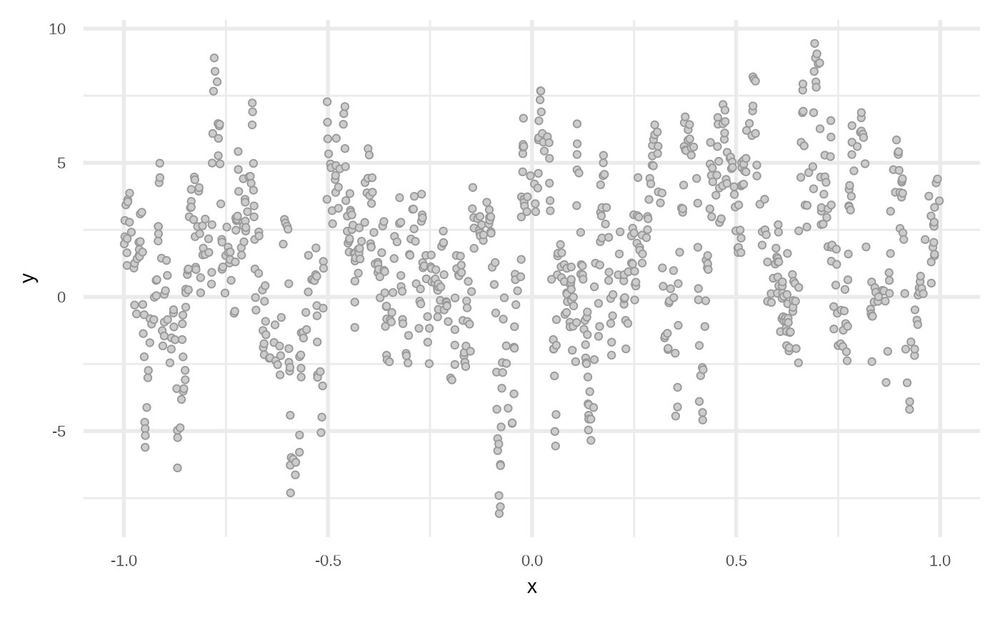
Fit classification algorithms
Linear Regression
This function uses stats::lm to fit a model.
df_lr <- fit_linear_model(df)
df_lr
#> # A tibble: 1,000 × 3
#> x y prediction
#> <dbl> <dbl> <dbl>
#> 1 0.000465 2.64 5.24
#> 2 0.00116 2.24 5.24
#> 3 0.00119 2.67 5.24
#> 4 0.00248 3.09 5.24
#> 5 0.00368 2.36 5.23
#> 6 0.00390 3.34 5.23
#> 7 0.00411 3.19 5.23
#> 8 0.00464 2.60 5.23
#> 9 0.00484 3.16 5.23
#> 10 0.00683 3.45 5.22
#> # … with 990 more rows
plot(df_lr)
By default the model use order = 1 of the variables, i.e, response ~ x + y. We can get a better fit if we increase the order.
df_lr2 <- fit_linear_model(df, order = 4, stepwise = TRUE)
attr(df_lr2, "model")
#>
#> Call:
#> stats::lm(formula = y ~ x + x_2 + x_3 + x_4, data = df)
#>
#> Coefficients:
#> (Intercept) x x_2 x_3 x_4
#> 2.932 13.711 -18.046 -16.697 19.801
plot(df_lr2)
Testing various orders.
orders <- c(1, 2, 3, 4)
orders |>
purrr::map(fit_linear_model, df = df) |>
purrr::map(plot) |>
purrr::reduce(`+`) +
patchwork::plot_layout(guides = "collect") &
theme_void() + theme(legend.position = "none")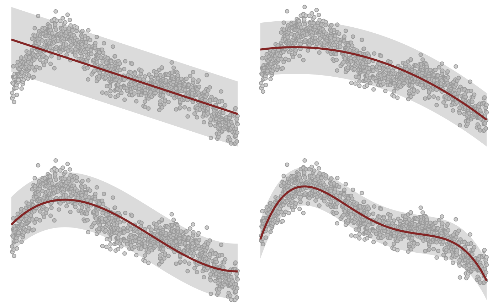
Regression Tree
Internally the functions uses partykit::ctree.
df_rt <- fit_regression_tree(df, maxdepth = 2)
plot(df_rt)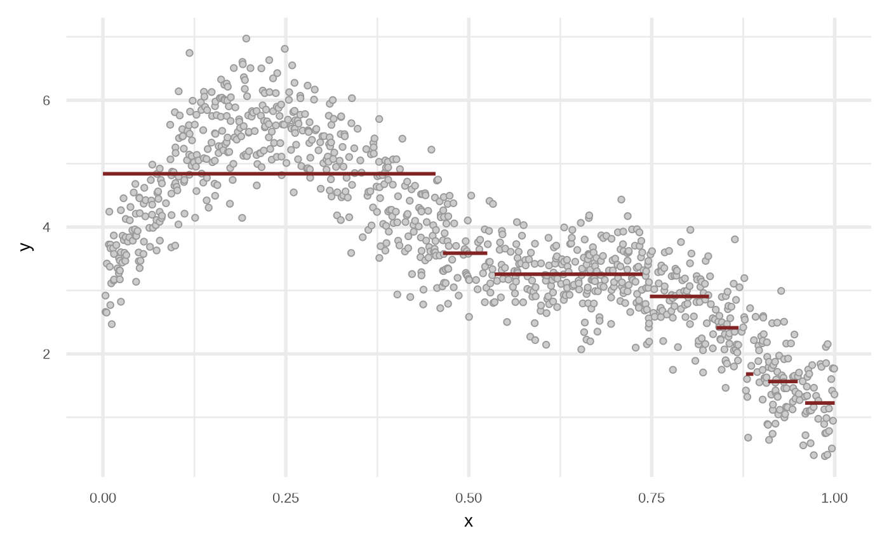

plot(fit_regression_tree(df))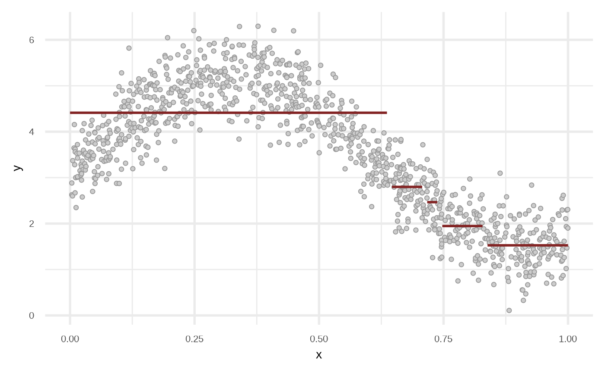
Linear Model Tree
Internally the functions uses partykit::mltree.
df_lmt <- fit_linear_model_tree(df, maxdepth = 3)
plot(df_lmt)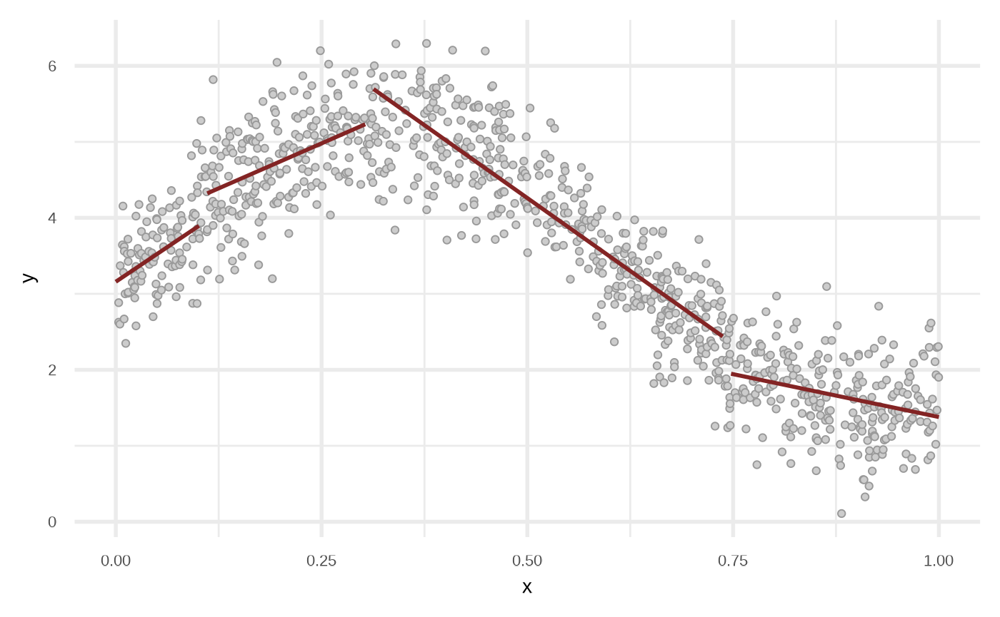
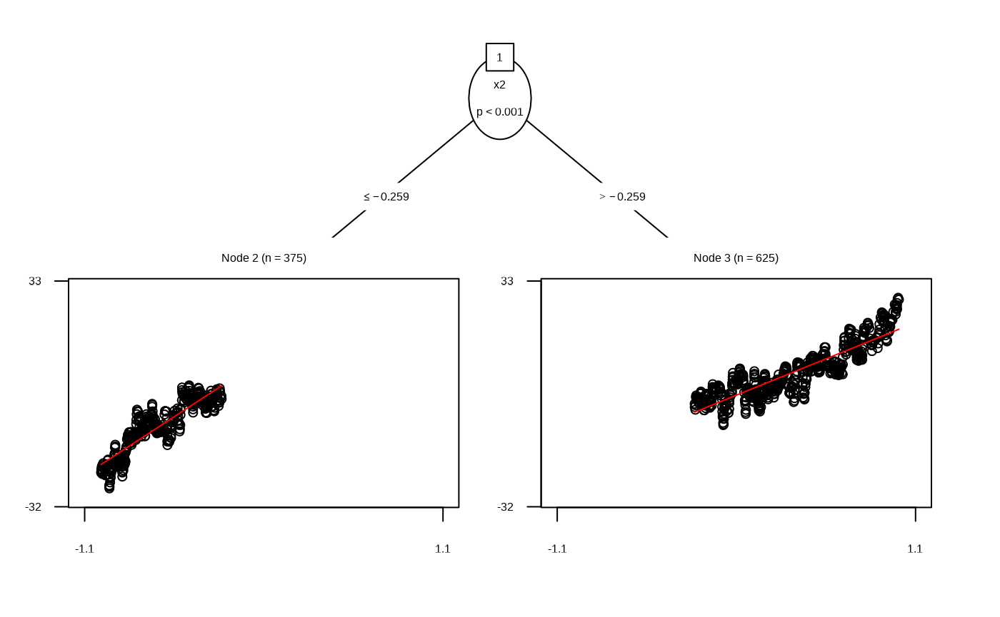
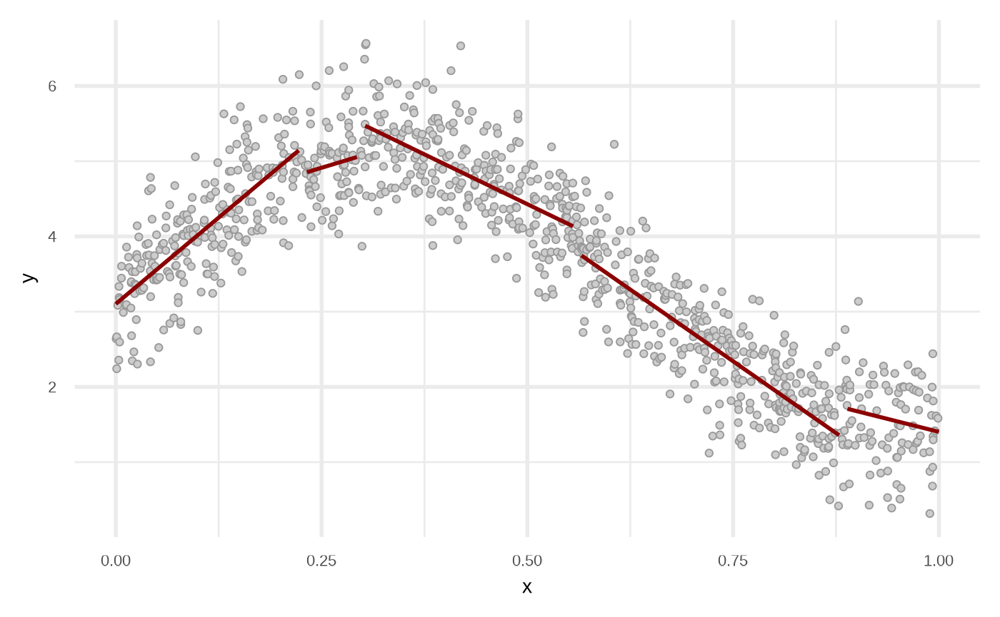
Random Forest
Internally the functions uses partykit::cforest.
df_rf <- fit_regression_random_forest(df)
plot(df_rf)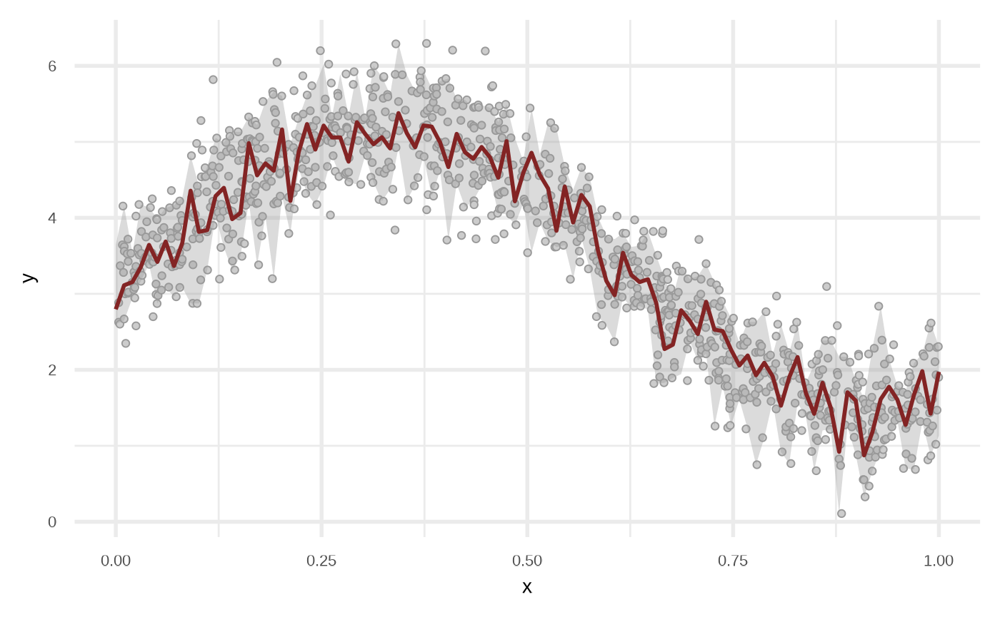
# this will be relative similar to `fit_regression_tree` due
# we are using 1 tree
plot(fit_regression_random_forest(df, ntree = 1, maxdepth = Inf))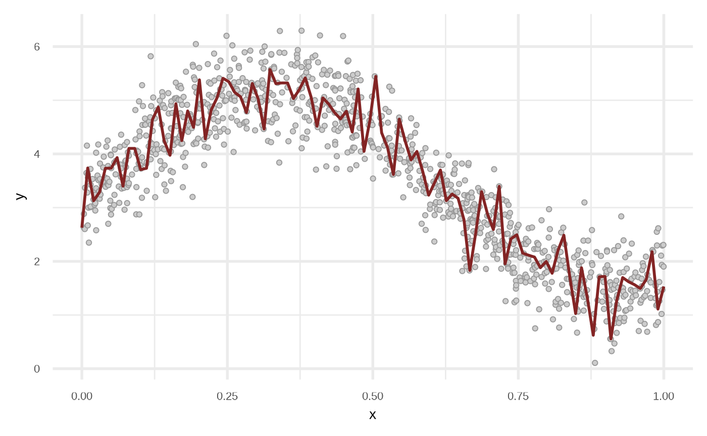